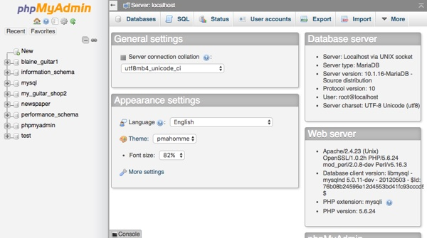
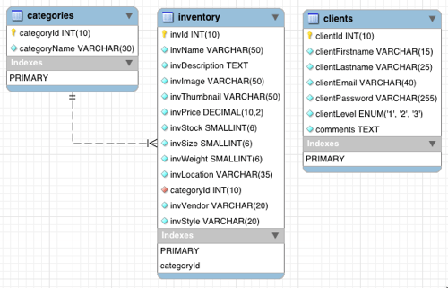

Creating a Local Database
Local Environment
Unlike working in a shared or remote environment, a local development environment provides much more flexibility in your setup and control. However, the same tool - PHPMyAdmin - is available to work with to setup and control the local database.
Launch PHPMyAdmin
In order to work with the local database, the XAMPP Apache and MySQL database servers must be running. Once they are both running:
- Open a browser.
- In the address bar type "http://localhost/phpmyadmin".
- The PHPMyAdmin tool should now be visible

Create the Database
- Click the "Databases" tab.
- Type the name of the new database into the "Create Database" text field.
- Click the "Create" button.
- The database should appear on the left in the database list.
- The interface should change to the "Create Table" view.
Create Table(s)
- In the "Create Table" view, type the name of the new table and indicate the number of fields for the new table (if building the tables from scratch), then click the "Go" button.
- Type in and click the appropriate checkboxes to create fields from scratch.
- Typically, if building from scratch you would have previously develeped an Entity Relationship Diagram (ERD) to know what fields were needed, their data types and sizes and any relationships might exist between fields in different tables.
 - Or, if importing a SQL file to create the tables, click the "Import" tab.
- Click the "Choose File" button and select the SQL file on your own computer.
- Scroll down, and click the "Go" button.
- If the SQL file has no errors, then the new table(s) should appear indented and below the database name on the left.
- And a success message should tell you that the queries were run successfully.